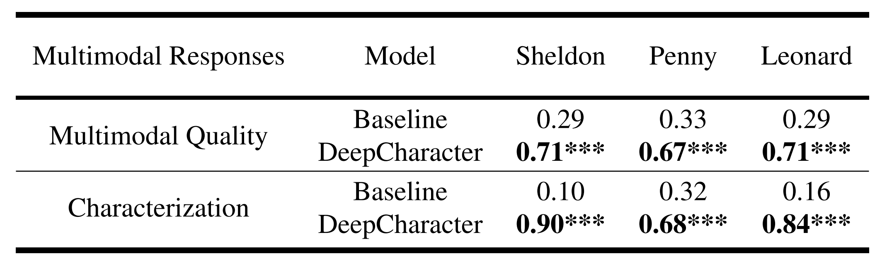

Characterization of Textual Responses
As a vivid illustration, we present 2 samples of different characters response to same textual inputs. Character’s personality can be somehow reflected in these different responses: Sheldon is a high IQ scientist who uses scientific terms like ’vortex of entropy’ or ’reaction time’ from time to time; Penny, on the other hand, is a woman with rich affection, preferring interjection like ’Yeah’, ’Oh god’ or ’Sweetie’; Leonard, although also being somewhat bookish, is more like a normal and helpful person who questions strange utterances and tend to give favorable replies. And as proved by characterization clustering, character classification and human evaluation, our DeepCharacter models can generate well-characterized textual responses.

Following a previous work on character classification, we use SAGE model to derive weights for words uttered by the characters. SAGE enforces a sparse prior on its parameters, and may be sensitive to infrequent terms in the text. To alleviate this issue, given one character, we experimentally group 100 randomly selected responses from this character, forming a virtual document, and reweight the words inside the document utilizing SAGE. Then we use a pretrained basic BERT model to encode the reweighted virtual documents into 128-dimensional embeddings as the final representation of one sample of the given character’s response. We perform t-SNE on these sampled representations from all the 5 characters and 5 DeepCharacters. Note that during the above process, BERT are fixed.
As shown in result, the responses from 5 characters can be well separately clustered, showing the character’s diversity in terms of speaking style and word preference. Intriguingly, the clusters of responses DeepCharacters aligns quite well with the ones of the corresponding characters, respectively. This verifies that the created DeepCharacters can generate highly personalized textual responses, well capturing the speaking style and word preference.

To provide quantative results, we also build a character classifier based on BERT to automatically evaluate the characterization of text responses generated by our DeepCharacters. The character classifier is trained on 18,000 documents from original corpus. This character classifier achieves 98.3% validation accuracy on origin corpus(900 documents) while getting 86.4% testing accuracy on generated responses (2,000 documents), showing that our DeepCharacters can well capture the characteristics.
For human evaluation, we randomly select 50 response samples from DeepSheldon, DeepPenny and DeepLeonard respectively, and each is paired with general response generated by DialoGPT as a non-personalized baseline, and response generated by other character model as an untargeted character comparison. Each question is presented to at least 3 judges.
The judges are asked to rank each response pair for how well the response matches the given material in speaking style, decision-making style and emotion tendency, using a 3-point Likert-like scale following. As shown in result, all three targeted DeepCharacters gain more preferences over non-personalized DialoGPT and untargeted DeepCharacters, which shows our DeepCharacter’s ability of capturing a specific character’s personality and speaking style.

Characterization of Multimodal Responses
As characterization in multi-modality is comparatively subjective, we rely on user study to evaluate our DeepCharacter’s capacity in generalizing personalized multimodal responses.
We use DialoGPT finetuned on whole DPCD corpus instead of any specific character, and unfinetuned TTS model as the neutral baseline, while the inference of acoustic-visual synchronization model remains the same as DeepCharacter. The neutral baseline has learned the TV show corpus’s special text distribution and can generate high quality speeches.
We randomly select 10 video clips generated by DeepSheldon, DeepLeonard and DeepPenny, respectively.Like PC-AVS, the total 30 video clips, paired with baseline results, are handed to all 30 judges. The judges are asked to rank each multimodal response pair base on how well the response matches the target character in terms of speaking style, tone and identity, considering all three modalities comprehensively. As shown in result, all three targeted DeepCharacters gain more preferences over the neutral baseline, which shows our DeepCharacter’s ability of generating characterized multimodal responses.

The above results demonstrate the collected DPCD can support our simple baseline to generate deep personalized characters.